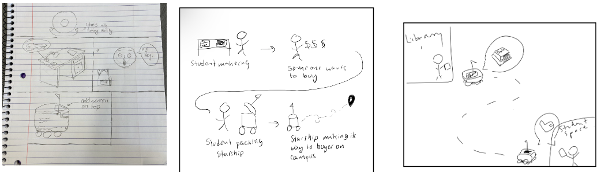
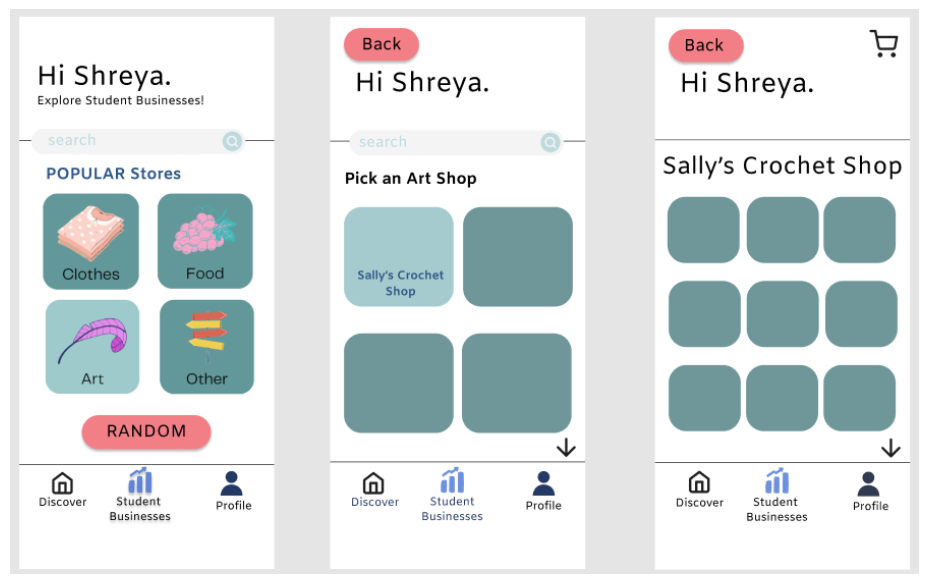

Project 1: What Else Can A Starship Do?
We wanted to explore what else a Starship can do besides simply delivering food.
Initial Design Process
Design Space

Scenerios

Secondary Research
History
Ever since it first launched at Purdue in 2019, the autonomous delivery robots have improved in their navigation abilities and the ability to be customized.
Robot Specs
Robot dimensions (without flag) - 697 x 569 x 571 mm
Total weight - 35 kg
Cargo box dimensions - 400 × 320 × 340 mm
Maximum load - 10 kg
Maximum speed - 6 km/h
Battery size - 1260 Wh
Operating time - over 12 hours of driving time
Sensors - ultrasonic sensors, 12 cameras, radar, GPS, alarm system, reflectors, time-of-flight cameras, stereo cameras
Object Identification Distance - up to 200 feet away
Camera FPS - 2,000 frames per second
It has compartments for separating hot and cold food (insulation component).
Securing lock during transport, the lid only opens when prompted by the customer’s mobile app or the company providing service.
Observations
We saw the starships stopping due to people walking in front of it
Saw the places where they go when they are not in use at the moment - Meredith South, Winifred, Harrison, Corec, Chick-fil-a
Got to scan QR codes to see information about the starships
The starship beeps at you if you move it when it is stationary
Final Prototype
Starship use for small student business/personal student use
in progress

Credits
Shreya Guddeti: Prototype Design
Group: Starship Case Study